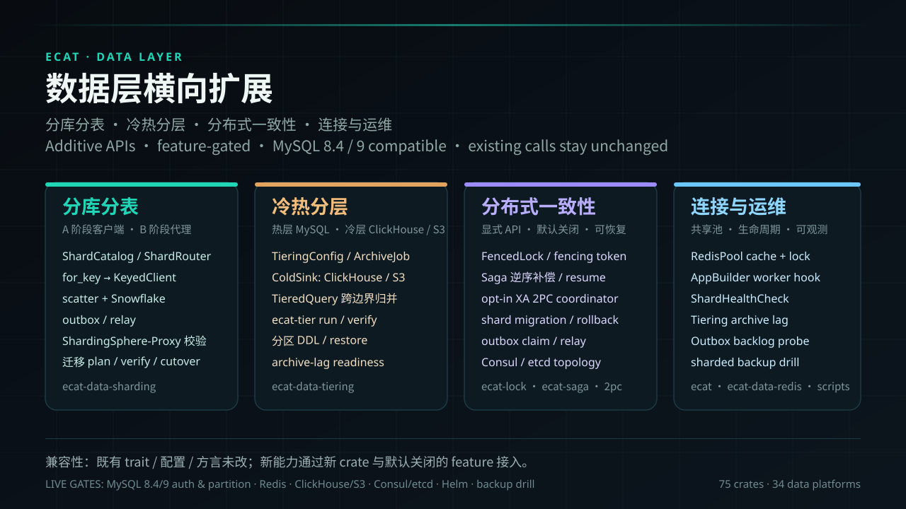

数据层横向扩展
在单机数据层之上增加分库分表、冷热分层、分片迁移与分布式一致性；新能力默认关闭，既有 trait 与配置不变。
ShardRouterscatterSnowflakeArchiveJobTieredQueryClickHouse / S3SagaXA 2PCFencedLockOutboxRedisPool
Ecat 把服务生命周期、传输、中间件、配置、注册发现和数据访问收进一套一致的抽象。核心保持精简，能力按 feature 组合。
HTTP 与 gRPC 从不同端口进入，经过同一套 tower::Layer，再由 Handler 处理。
分库分表、冷热分层、迁移、Saga/2PC、fencing 与共享 Redis 池，全部以新 crate / feature 接入。

核心保持精简。每项能力都是一个 crate 或 feature，依赖树跟着服务走。
在单机数据层之上增加分库分表、冷热分层、分片迁移与分布式一致性；新能力默认关闭，既有 trait 与配置不变。
用 Protobuf 定义 API、错误码和元数据，prost 与 tonic-build 在编译期生成强类型代码。
axum 与 tonic 都构建在 tower 之上，超时、限流、熔断、认证只需要写一次。

Recovery、Tracing、Logging、Timeout、RateLimit、Security、CircuitBreaker、Metrics、Retry、Validate、CORS。
关系型、缓存、搜索、图、时序、文档、对象存储和 OLAP 共用统一 trait。
tracing、Prometheus 指标和 /health、/ready 端点，trace_id 贯穿 HTTP 与 gRPC。
SecurityLayer 检测 SQL 注入、XSS、SSRF；JWT、API Key 与 mTLS 按需启用。

#[derive(Entity)]、类型状态查询构建器和五套方言。没有过滤条件无法删改。
new、proto、run --watch、build、upgrade，加上 pet 子命令。
HttpClient 与 GrpcClient 接入服务发现和负载均衡；Kafka、RabbitMQ、MQTT、NATS 与 EventBus 传递消息；WebSocket、GraphQL、OpenAPI 和版本路由共用入口。
ecat-bench 对比裸 axum、MetricsLayer 与完整中间件栈；Docker、Kubernetes、Helm 与 CI 模板随 ecat-deploy 提供。
从 2.x 的数据后端到 7.1 的宠物 CLI，再到 7.2.0 的数据层横向扩展。Phase 1–16 已完成，Phase 17 已发布（live gate 仍待真机）。
11 个数据库后端，TLS、WebSocket、API 版本路由与部署模板落地。
消息流改为 Bytes，from_config 签名统一，全仓测试补齐。
RdbmsClient 保留 transaction()，事务内可以直接执行 SQL。
ecat-orm 与派生宏发布，类型状态查询构建器阻止无过滤删改。
Breaker 与状态机对外暴露，RdbmsError 增加 NoAvailableReplica。
所有数据后端使用同一套许可、熔断、超时外壳，出站指标从配置自动注册。
13 个矢量形态，ecat pet 子命令，资源随 ecat-cli 打包。
升级 rustls 与 quinn-proto，清理最新 RustSec 通告，无 API 变更。
分库分表、冷热分层、迁移、Saga/2PC、fencing、远程拓扑与 Redis 共享池；live gates 待真机。
关于定位、数据库、安装与生产可用性的快速回答。
Ecat（一只猫）是对标 go-kratos/kratos v3 的 Rust 微服务框架，提供 API-first 开发体验、HTTP 与 gRPC 共用 tower 中间件，以及 60 个可按 feature 组合的 crate。
Ecat 对齐 Kratos 的 API-first、可插拔与统一抽象理念，但使用 Rust 生态：tower::Service/Layer、axum、tonic 与 prost，不做 Go in Rust。
19 个数据后端，覆盖 RDBMS（SQLite、PostgreSQL、MySQL、TiDB、SQL Server）、缓存、搜索、图、时序、文档、对象存储与 OLAP；除 Memcached 外均带超时与熔断。
需要 Rust 1.85+ 与 protoc。运行 cargo install ecat-cli，然后用 ecat new 创建项目、ecat proto 生成代码、ecat run 启动服务。
内置 Recovery、Tracing、Logging、Timeout、RateLimit、Security、CircuitBreaker、Metrics、Retry、Validate、CORS，提供健康检查、Prometheus 指标与 Docker/Kubernetes/Helm 模板；已知限制见文档参考页。
支持。ecat-data-sharding 提供分片路由/scatter/迁移，ecat-data-tiering 提供 MySQL 分区归档与 ClickHouse/S3 冷层；均为独立 crate / feature，默认关闭，既有单机接口不变。
CLI 已发布到 crates.io。源码、发布说明和部署模板在 GitHub。
只需要 Rust 1.85+ 和 protoc。命令会安装 ecat 二进制和宠物资源。
cargo install ecat-cli代码遵循 Apache-2.0，视觉资产另附授权。